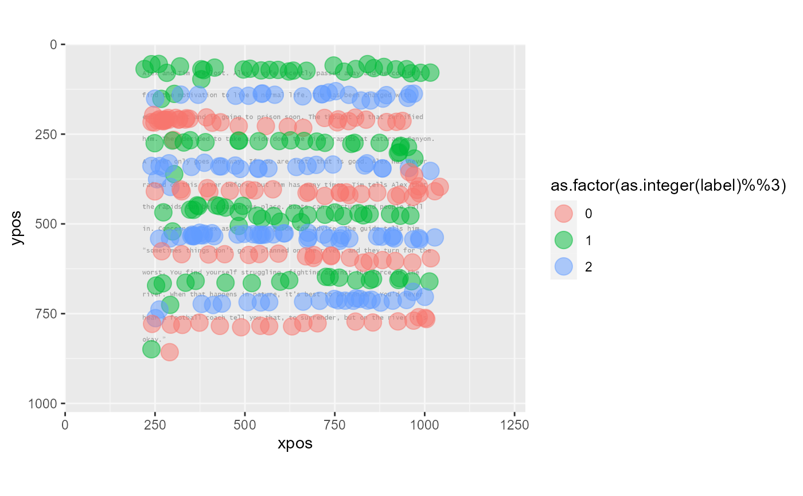

Plot gaze fixation data overlayed on a bitmap image. This is a convenience wrapper around ggplot2::ggplot().
fixPlot(
data,
bgImage = NULL,
bgAlpha = 0.33,
xyMap = ggplot2::aes_string(x = "xpos", y = "ypos"),
pointMap = ggplot2::aes_string(size = "dur"),
pointAlpha = 0.5,
mar = c(0, 0, 0, 0),
...,
showPlot = TRUE
)A data.frame containing one fixation per row. Must include at least x and y coordinates. Origin is assumed to be upper left corner.
Path to background image. Must be a PNG file. Usually this will correspond to the visual stimulus being viewed by subjects while their eye movements were recorded.
Alpha level for background layer. Defaults to .33.
Aesthetic mapping (ggplot2::aes_string()) for x and y coordinates. Passed to ggplot().
Additional aesthetics specific to points. Passed to geom_point().
Set fixation point transparency. Defaults to .5.
A 4 vector for margin adjustment (x & y scale limits): top, right, bottom, left. Use positive values move margins toward center of plot (trim the display area). Use negative values to expand the display area beyond the bitmap.
Additional arguments passed to ggplot2::geom_point().
Logical indicating whether to display the plot. Defaults to TRUE.
A ggplot2 object.
This is a convenience function for using ggplot() to lay fixation data over a background bitmap. At present, only PNG files are supported for background images. Usually, these will correspond to the visual stimulus viewed by subjects while gaze was recorded. Function returns a ggplot2 object which can be further modified by ggplot2 geoms.
data <- data.frame(x=seq(10, 1270, length.out=10),
y=seq(10, 1014, length.out=10))
bg <- system.file("extdata/story01.png", package="FDBeye")
fixPlot(data = data,
bgImage = bg,
xyMap = ggplot2::aes_string(x='x', y='y'),
pointMap =ggplot2::aes_string())
data(EToralreading)
D <- EToralreading
D$label <- as.factor(as.integer(D$label))
fixPlot(data=subset(D, subset=(subj=="s0149")&(story=="1")&(label %in% as.character(1:13))),
bgImage=system.file("extdata/story01.png", package="FDBeye"),
pointMap=ggplot2::aes_string(color="as.factor(as.integer(label)%%3)"), size=5,
pointAlpha=.5)
